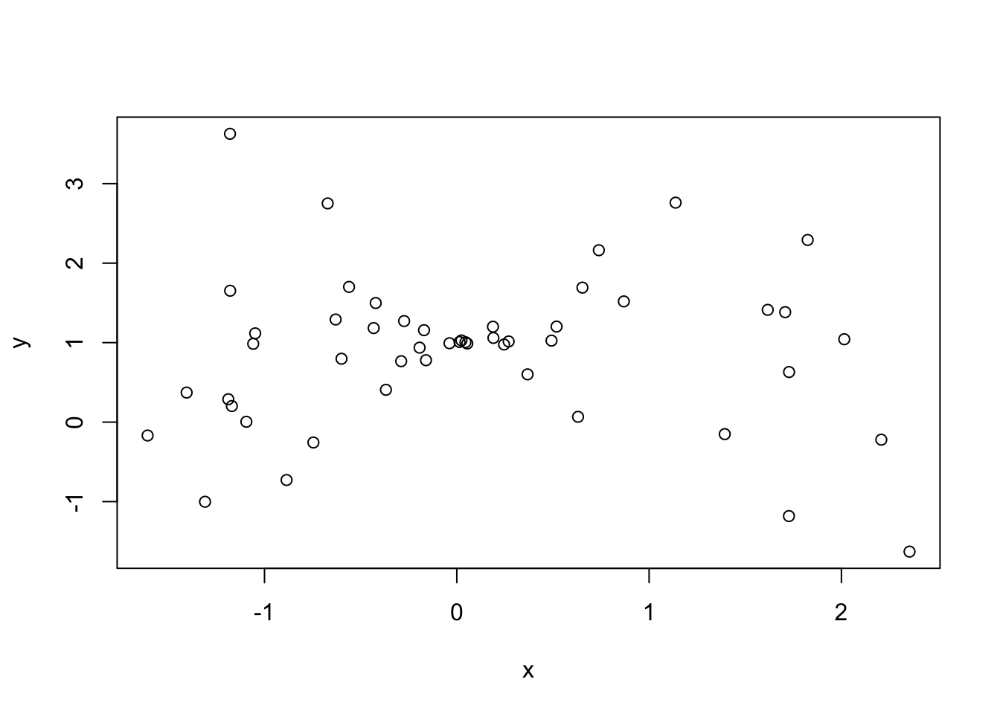
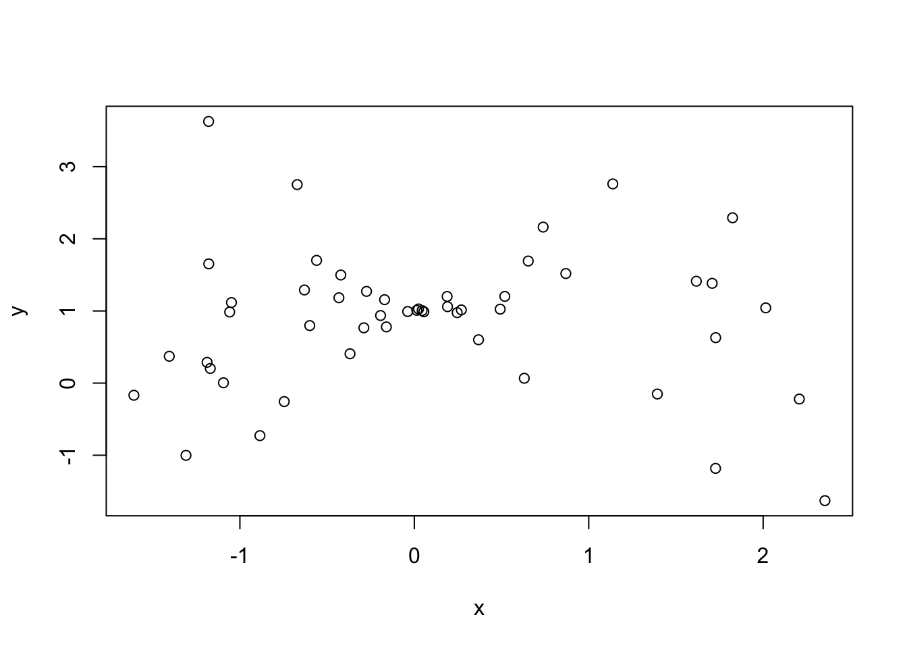

plot(x,y)
Bivariate analysis
This week’s topics focus on bivariate analysis.
The goal of a bivariate analysis is to understand the relationship between two variables.
There are a few common ways to perform bivariate analysis:
Estimating differences in proportions
Scatter plots
Correlation coefficients
Simple linear regression
A simple linear regression (sometimes referenced as a bivariate regression) is a linear equation describing the relationship between an explanatory variable and an outcome variable.
There is an assumption that the explanatory variable influences the outcome variable, and not the other way around.
Take, for example, a variable \(y_i\) which denotes the income of some individual in a sample, and we index this data using \(i\) where \(i \in \{1, 2, ..., n\}\). We can let some other variable in our data \(x_i\) represent the years of education for the same individual. A simple linear regression equation of these variables take the following form: \[y_i = b_0 + b_{1}x_{i} + e_i\]
where \(b_1\) is the sample estimate of the slope of the regression line with respect to the years of education and \(b_0\) is the sample estimate for the vertical intercept of the regression line.
As a reminder, correlation ranges from -1 to 1. It gives us an indication on two things:
The direction of the relationship between the two variables
The strength of the relationship between the two variables
Any outliers can greatly impact the value of a correlation coefficient.
plot(x,y)
When generating cross tabulations, we can make sense of a few bivariate tests:
Differences in proportions
Standard errors of the difference in proportions
Confidence intervals for the differences
T-test for differences in proportions
# ---
# title: Exploring associations between income and political party in the US
# subtitle: sample paper 2
# author: Nathan Alexander
# course: DATA 202 - fall 2023
# ---
# research inquiry: does income relate to political party support in the US?
# data: 2020 sample data from the General Social Survey (GSS)
# note(s): variables should be mutated and recoded into two levelsinstall.packages("tidyverse", repos = "http://cran.us.r-project.org")
library(tidyverse)
library(dplyr)
library(tidyr)gss_cat data in the package forcatsgetwd() # check working directory
?gss_cat # view data documentation
gss_cat # call data frame
glimpse(gss_cat) # glimpse data
summary(gss_cat) # view summary of datagss_cat_clean <- gss_cat %>%
na.omit() %>%
select(year, rincome, partyid) %>%
rename(income = rincome) %>%
rename(party = partyid)
gss_cat_clean # view cleaned datadf <- gss_cat_clean %>%
filter(year==2000)
head(df) # view top of data
tail(df) # view bottom of data
summary(df) # check data## create a frequency table of each level in the income variable
df %>% count(party)
## drop 'No answer', 'Don't know', 'Refused', and 'Not applicable' levels
df <- df %>%
filter(income != "No answer",
income != "Don't know",
income != "Refused",
income != "Not applicable") %>%
droplevels() # use droplevels() to remove levels from variable for factors
## use levels() function to view levels for income variable
levels(df$income)
## create two levels: below $20,000 and above $20,000
df <- df %>%
mutate(income = fct_recode(income,
"More than 20000" = "$25000 or more",
"More than 20000" = "$20000 - 24999",
"Less than 20000" = "$15000 - 19999",
"Less than 20000" = "$10000 - 14999",
"Less than 20000" = "$8000 to 9999",
"Less than 20000" = "$7000 to 7999",
"Less than 20000" = "$6000 to 6999",
"Less than 20000" = "$5000 to 5999",
"Less than 20000" = "$4000 to 4999",
"Less than 20000" = "$3000 to 3999",
"Less than 20000" = "$1000 to 2999",
"Less than 20000" = "Lt $1000"))
## view a summary of your transformed data frame
summary(df)## create a frequency table of each level in the party variable
df %>% count(party)
## drop 'No answer', 'Independent' and 'Other Party' levels
df <- df %>%
filter(party != "No answer",
party != "Independent",
party != "Other party") %>%
droplevels() # use droplevels() to remove levels from variable for factors
## create two levels: 'Republican' and 'Democrat'
df <- df %>%
mutate(party = fct_recode(party,
"Republican" = "Strong republican",
"Republican" = "Not str republican",
"Republican" = "Ind,near rep",
"Democrat" = "Ind,near dem",
"Democrat" = "Not str democrat",
"Democrat" = "Strong democrat"))
## remove year from data frame
df <- df %>%
select(-year)
## view a summary of the data to check for any errors
summary(df)## create a frequency table and bar graph of income
table.income = table(df$income)
table.income
barplot(table.income,
main = "Bar graph of Income",
xlab = "Respondent Income",
ylab = "Frequency")## the below code produces the same output as above with specifications
barplot(table(df$income),
main = "Bar graph of Income",
col = "lightgreen",
xlab = "Respondent Income",
ylab = "Frequency",
ylim = c(0,650)) # this y-axis range: (0, 650) works best for my plot## create a frequency table and bar graph of party
table.party = table(df$party)
table.party
barplot(table.party,
main = "Bar graph of Party",
xlab = "Respondent Party",
ylab = "Frequency")## the below code produces the same output as above with specifications
barplot(table(df$party),
main = "Bar graph of Party",
col = c("red","blue"),
xlab = "Respondent Party",
ylab = "Frequency",
ylim = c(0,600)) # this y-axis range: (0, 550) works best for my plot## create a stacked bar plot of the proportions
#### question: which of the two plots do you prefer, why?
plot(df$income, df$party)plot(df$party, df$income)## the below code produces similar outputs as above with specifications
plot(df$party, df$income,
main = "Mosaic Plot of Political Party and Income",
col = c("lightyellow","lightgreen"),
xlab = "Political Party",
ylab = "Income")## gather sample size
n = count(df)
n
## view a basic cross tabulation
table(df$income, df$party)## load required libraries (and packages, where needed)
install.packages("descr", repos = "http://cran.us.r-project.org")
library(descr)
install.packages("Hmisc", repos = "http://cran.us.r-project.org")
library(Hmisc)
## create a cross tab (list dependent variable in your hypothesis first)
crosstab(df$party, df$income)
## add column percentages to the cross tab
crosstab(df$party, df$income,
prop.c=T) # add column percentages## add row percentages to the cross tab
crosstab(df$party, df$income,
prop.r=T) # add row percentages
## get expected frequencies and cell chi-square contributions
crosstab(df$party, df$income,
expected = T, # get expected values
prop.chisq=T) # get chi-square contribution
## get critical value of chi-square, p=.05, df=1
#### recall: df = (r-1)(c-1)
qchisq(.05, 1, lower.tail=F)
## get chi-square statistic
chisq.test(df$party, df$income)### limitation 1: sampling error
# data come from a sample and there are likely differences in other samples
### limitation 2: category reductions
# creating two levels for the variables greatly impacted the diversity of responses
### limitation 3: cases dropped
# sample was further impacted by the number of values dropped in the analysis
### limitation 4: chi-square test
# the chi-square test does not tell us about the strength or direction of association